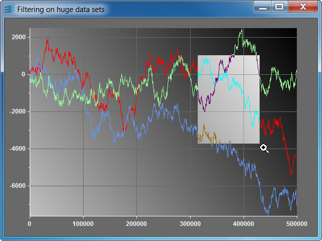

chfilterShows how to use a predefined filter to display a large number of points.

This sample shows you how the IlvChartPointsFilter class can be associated
with displayers that are connected to huge data sets. The predefined
IlvChartPointsFilterFactory class is used to set the
filtering mechanism on the displayers. You can invoke the sample program with three
optional parameters:
If no parameter is given, the sample creates three displayers with 500000 points each. The cluster default size is 5.
The following interactions are available:
IlvCartesianChartIlvPolylineChartDisplayerIlvChartPointsFilterIlvChartPointsFilterFactoryIlvChartInteractorManagerIlvChartInteractor